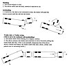

jackknifing

Definition: Jackknifing is the folding of an articulated vehicle so that it resembles the acute angle of a folding pocket knife. If a vehicle towing a trailer skids, the trailer can push the towing vehicle from behind until it spins the vehicle around and faces backwards. This may be caused by equipment failure, improper braking, or adverse road conditions such as an icy road surface. In extreme circumstances, a driver may attempt to jackknife the vehicle deliberately to halt it following brake failure.
Source: Wikipedia
Wikipedia Page (Something wrong with this association? Let us know.)
Wikidata Page (Something wrong with this association? Let us know.)